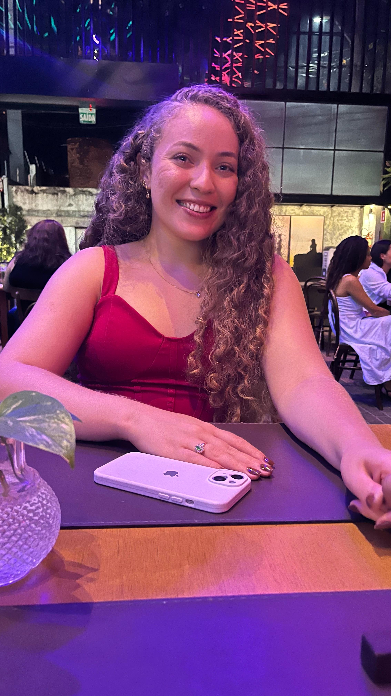
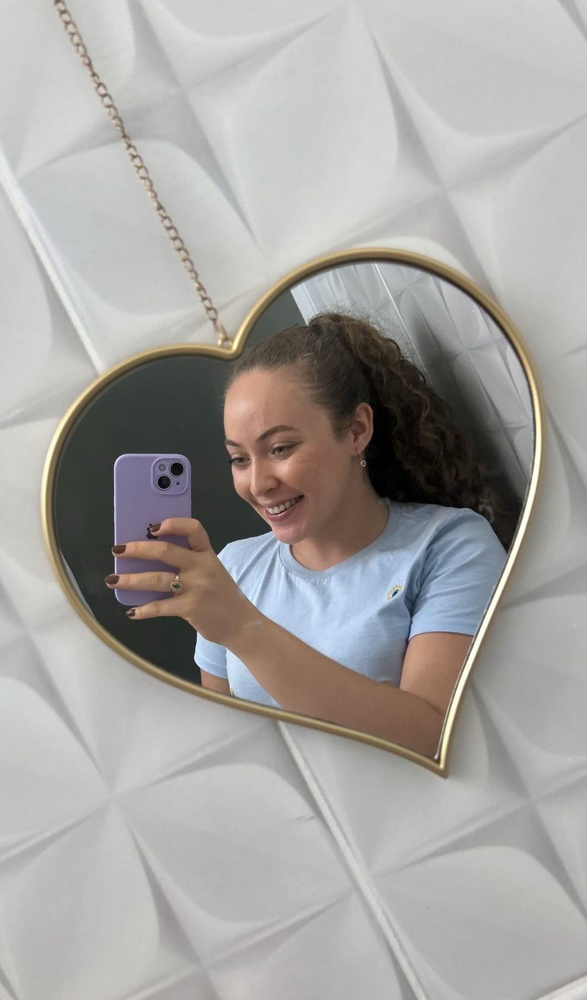

Hoje o dia amanheceu mais bonito, porque é seu dia! que sorte a minha ter você nele. Com esse coração gigante, esse sorriso lindo que ilumina tudo ao redor e seu jeitinho tão especial que espalha felicidade por onde passa.
Desejo esse novo ciclo seja repleto de momentos doces, sonhos realizados e muitas conquistas. Você merece o mundo, mulher guerreira que vai atrás dos seus objetivos e sempre está buscando mais, e por isso Deus tem lhe abençoado tanto.
Sou grato por ter te conhecido, meus melhores momentos são contigo, você me ensinou muita coisa, me mostrou o quanto é gostoso ter alguém por perto e mesmo diante da correria de nossas vidas, sempre temos um ao outro. Com todo carinho do mundo, Parabéns